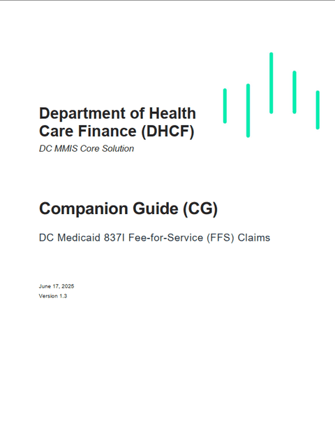
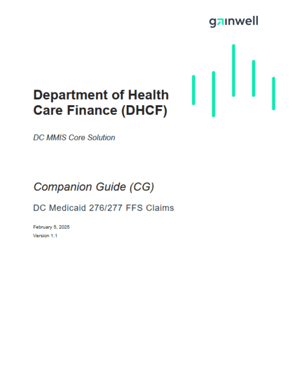

Technical Writer Intern
Wrote and edited public, HIPAA-compliant Companion Guides for DC Medicaid (DHCF) that clarify the ASC X12N 5010 standards for trading partners. Both guides are published by Gainwell.
- Contributed to an 80-page Project Management Plan and Software Design Document that became the team's permanent SOP for EDI workflows.
- Wrote and revised 6 companion guides for the Washington, D.C. EDI team, reducing vendor onboarding questions by ~30%.
- Designed and presented an interactive Power BI vendor-tracking dashboard to 15+ stakeholders, adopted for ongoing project monitoring.
- Consolidated 20+ SME contributions into final deliverables under aggressive deadlines while maintaining HIPAA and ASC X12 compliance.

837I FFS Claims Companion Guide
Wrote the 837I v1.3 update: institutional claims rules, SNIP validation, and submission constraints.

276/277 FFS Claims Companion Guide
Edited and enhanced the 276/277 v1.1 guide, then reformatted it into a cited, scannable Markdown version.